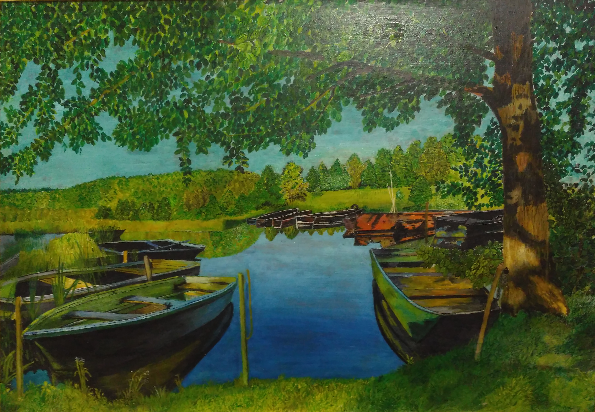

Ясным утром на тихом пруде Резво ласточки реют кругом, Опускаются к самой воде, Чуть касаются влаги крылом. На лету они звонко поют, А вокруг зеленеют луга, И стоит, словно зеркало, пруд, Отражая свои берега. И, как в зеркале, меж тростников, С берегов опрокинулся лес, И уходит узор облаков В глубину отраженных небес. Облака там нежней и белей, Глубина - бесконечна, светла... И доносится мерно с полей Над водой тихий звон из села. Бунин И.А.